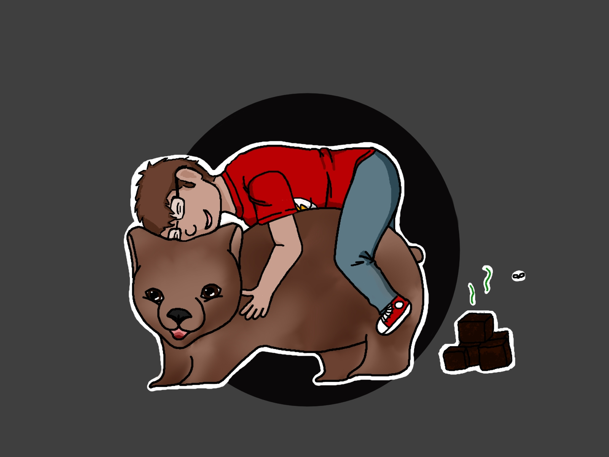

Portfolio of Tobias

Summary
I am an 24 years old student of geography and making my masters degree. Currently i am working for the city of Berlin as an clerk for soil protection. My Goal is to learn how to code and combine that with my geography study.
Education
- 2006-2012 Preschool
- 2012-2019 Highschool (Abitur)
- 2019-2020 Bachelor of Math at TU (canceled)
- 2020-2023 Bachelor of Geography at HU
- since 2023 Master of Geography at FU
Work experience
- 2014-2018 Paper Deliveryboy
- 2018-2022 Cashier Edeka
- since 2022 Envirment and Nature Protection Agency
Skills
GIS, R and Pyhton
Microsoft Office
Web Develobment?
Awards and Certificates